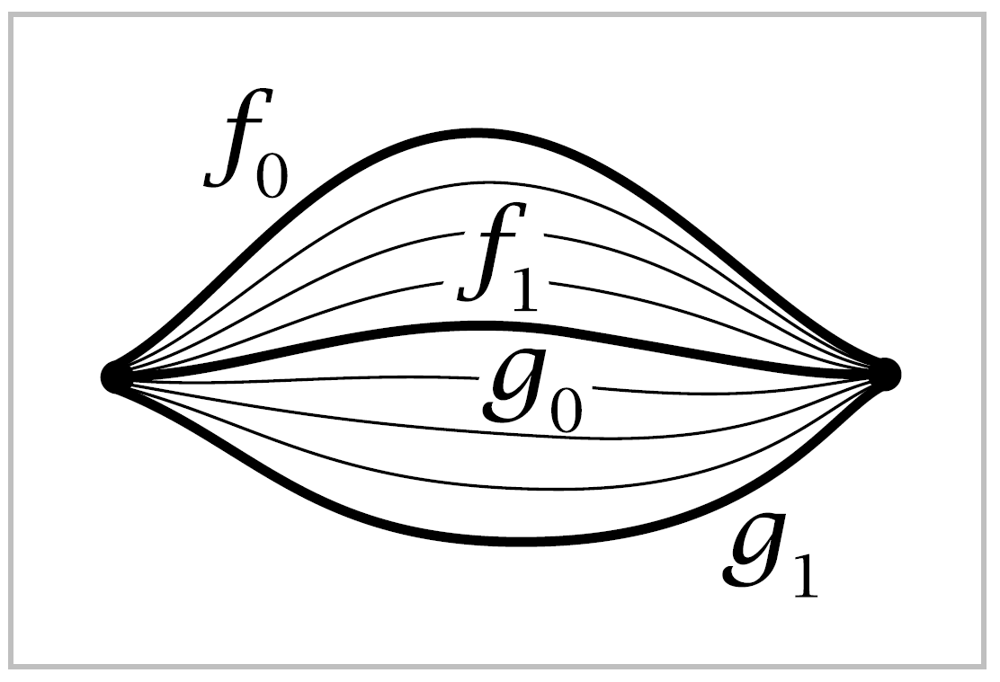
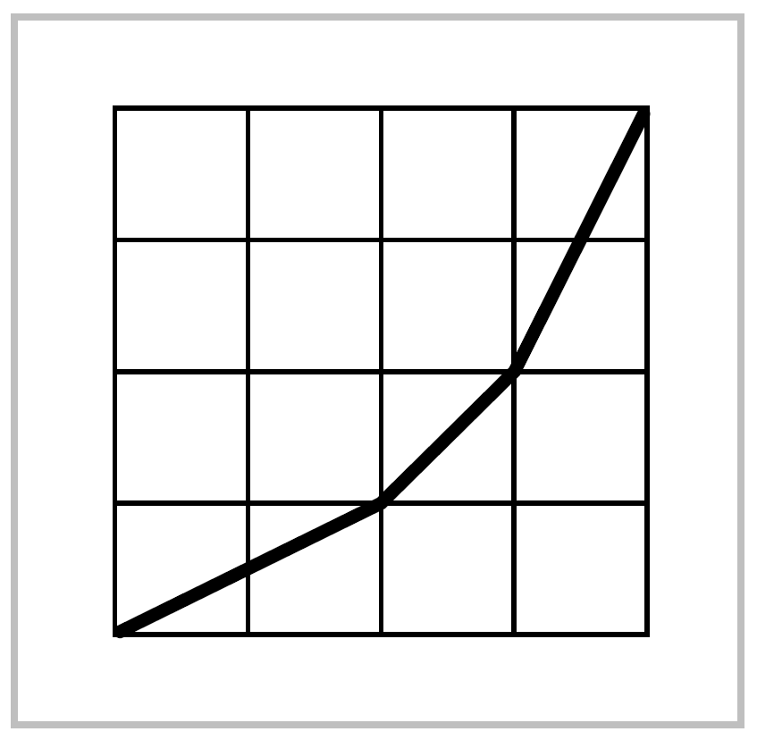
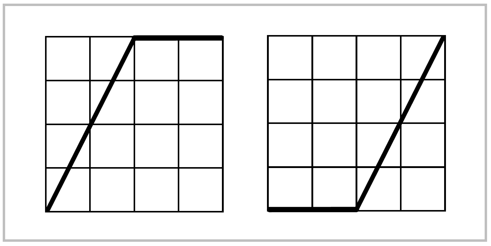
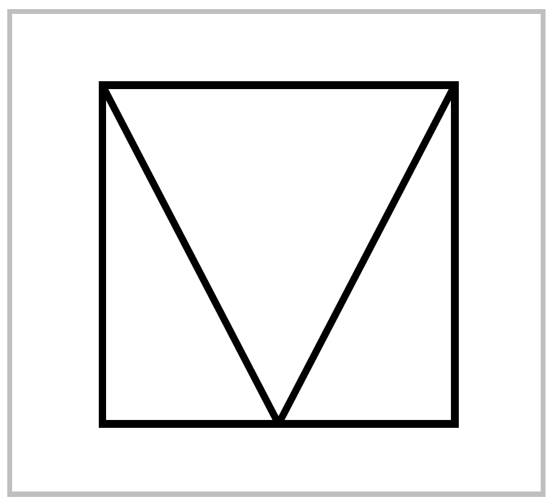

Paths and Homotopy#
The fundamental group will be defined in terms of loops and deformations of loops. Sometimes it will be useful to consider more generally paths and their deformations, so we begin with this slight extra generality.
By a path in a space \(X\) we mean a continuous map \(f:I \rightarrow X\) where \(I\) is the unit interval [0,1]. The idea of continuously deforming a path, keeping its endpoints fixed, is made precise by the following defintion. A homotopy of paths in \(X\) is a family \(f_t: I \rightarrow X, \, 0 \leq t \leq 1\), such that
When two paths \(f_0\) and \(f_1\) are connected in this way by a homotopy \(f_t\), they are said to be homotopic. The notation for this \(f_0 \simeq f_1\).
Example 1.1: Linear Homotopies. Any tow paths \(f_0\) and \(f_1\) in \(\mathbb{R}^n\) having the same endpoints \(x_0\) and \(x_1\) are homotopic via the homotopy \(f_t(s)=(1-t)f_0(s)+tf_1(s)\). During this homotopy each point \(f_0(s)\) travels along the line segment to \(f_1(s)\) at constant speed. This is because the line through \(f_0(s)\) and \(f_1(s)\) is linearly parametrized as \(f_0(s)+t[f_1(s)-f_0(s)]=(1-t)f_0(s)+tf_1(s)\), with the segment from \(f_0(s)\) then this segment degenerates to a point and \(f_t(s)=f_0(s)\) for all \(t\). This occurs in particular for \(s=0\) and \(s=1\), so each \(f_t\) is a path from \(x_0\) to \(x_1\). Continuity of the homotopy \(f_t\) as a map \(I \times I \rightarrow \mathbb{R}^n\) follows from continuity of \(f_0\) and \(f_1\) since the algebraic operations of vector addition and scalar multiplication in the formula for \(f_t\) are continuous.
This construction shows more generally that for a convex subspace \(X \subset \mathbb{R}^n\), all paths in \(X\) with given endpoints \(x_0\) and \(x_1\) are homotopic, since if \(f_0\) and f_1 lie in \(X\) then so does the homotopy \(f_t\).
Before proceeding further we need to verify a technical property:
Proposition 1.2. The relation of homotopy on paths with fixed endpoints in any space is an equivalence relation
The equivalence class of a path \(f\) under the equivalence relation of homotopy will be denoted \([f]\) and called the homotopy class of \(f\).
Proof: Reflexivity is evident since \(f \simeq f\) by the constant homotopy \(f_t = f\). Symmetry is also easy since if \(f_0 \simeq f_1\) via \(f_t\), then \(f_1 \simeq f_0\) via the inverse homotopy \(f_{1-t}\).
{kind=link}
For transitivity, if \(f_0 \simeq f_1\) via \(f_t\) and if \(f_1 = g_0\) with \(g_0 \simeq g_1\) via \(g_t\), then \(f_0 \simeq g_1\) via the homotopy \(h_t\) that equals \(f_{2t}\) for \(0 \leq t \leq \frac{1}{2}\) and \(g_{2t-1}\) for \(\frac{1}{2} \leq t \leq 1\). These two definitions agree for \(t=\frac{1}{2}\) since we assume \(f_1 = g_0\). Continuity of the associated map \(H(s,t)=h_t(s)\) comes from the elemetary fact, which will be used frequently without explicit mention, that a function defined on the union of two closed sets is continuous if it is continuous when restricted to each of the closed sets separately. In the case at hand we have \(H(s,t)=F(s,2t)\) for \(0 \leq t \leq \frac{1}{2}\) and \(H(s,t) = G(s, 2t-1)\) for \(\frac{1}{2} \leq t \leq 1\) where \(F\) and \(G\) are the maps \(I \times I \rightarrow X\) associated to the homotopies \(f_t\) and \(g_t\). Since \(H\) is continuous on \(I \times [0, \frac{1}{2}]\) and on \(I \times [\frac{1}{2}, I]\), it is continuous on \(I \times I\). ◻
Given two paths \(f,g:I \rightarrow X\) such that \(f(1) = g(0)\), there is a composition or product path \(f\cdot g\) that traverses first \(f\) and then \(g\), defined by the formula
{kind=link}
Thus \(f\) and \(g\) are traversed twice as fast in order for \(f\cdot g\) to be traversed in unit time. This product operation respects homotopy classes since if \(f_0 \simeq f_1\) and \(g_0 \simeq g_1\) via homotopies \(f_1\) and \(g_t\), and if \(f_0(1) = g_0(0)\) so that \(f_0\cdot g_0\) is defined, then \(f_t \cdot g_t\) is defined and provides a homotopy \(f_0 \cdot g_0 \simeq f_1 \cdot g_1\).
In particular, suppose we retrict attention to paths \(f: I \rightarrow X\) with the same starting and ending point \(f(0) = f(1) =x_0 \in X\). Such pats are called loops, and the common starting and ending point \(x_0\) is referred to as the basepoint. The set of all homotopy classes \([f]\) of loops \(f:I \rightarrow X\) at the basepoint \(x_0\) is denoted \(\pi_1(X,x_0)\).
Proposition 1.3. \(\pi_1(X,x_0)\) is a group with respect to the product \([f][g]=[f\cdot g]\).
This group is called the fundamental group of \(X\) at the basepoint \(x_0\). We will see in Chapter 4 that \(\pi_1(X, x_0)\) is the first in a sequence of groups \(\pi_n(X,x_0)\), called homotopy groups, which are defined in an entirely analogous fashion using the \(n\)-dimensional cube \(I^n\) in place of \(I\).
Proof: By restricting attention to loops with a fixed basepoint \(x_0 \in X\) we guarantee that the product \(f\cdot g\) of any two such loops is defined. We have already observed that the homotopy class of \(f \cdot g\) depends only on the homotopy classes of \(f\) and \(g\), so the product \([f][g]=[f\cdot g]\) is well-defined. It remains to verify the three axioms for a group.
As a preliminary step, define a reparametrization of a path \(f\) to be a composition \(f\varphi\) where \(\varphi:I \rightarrow I\) is any continuous map such that \(\varphi(0)=0\) and \(\varphi(1)=1\). Reparametrizing a path preserves its homotopy class since \(f\varphi \simeq f\) via the homotopy \(f\varphi_t\) where \(\varphi_t(s) = (1-t)\varphi(s) + ts\) so that \(\varphi_0 = \varphi\) and \(\varphi_1(s) = s\). Note that \((1-t)\varphi(s)+ts\) lies between \(\varphi(s)\) and \(s\), hence is in \(I\), so the composition \(f\varphi_t\) is defined.
{kind=link}
If we are given paths \(f,\, g,\, h\) with \(f(1)=g(0)\) and \(g(1)=h(0)\), then both products \((f\cdot g)\cdot h\) and \(f\cdot (g\cdot h)\) are defined, and \(f\cdot(g\cdot h)\) is a reparametrization of \((f\cdot g)\cdot h\) by the piecewise linear function \(\varphi\) whose graph is shown in the figure at the right. Hece \((f \cdot g)\cdot h \simeq f \cdot(g\cdot h)\). Restricting attention to loops at the basepoint \(x_0\), this says the product in \(\pi_1(X, x_0)\) is associative.
{kind=link}
Given a path \(f:I\rightarrow X\), let \(c\) be the constant path at \(f(1)\), defined by \(c(s)=f(1)\) for all \(s\in I\). Then \(f\cdot c\) is a reparametrization of \(f\) via the function \(\varphi\) whose graph is shown in the first figure at the right, so \(f \cdot c \simeq f\). Similarly, \(c \cdot f \simeq f\) where \(c\) is now the constant path at \(f(0)\), using the reparametrization function in the second figure. Taking \(f\) to be a loop, we deduce that the homotopy class of the constant path at \(x_0\) is a two-sided identity in \(\pi_1(X,x_0)\).
For a path \(f\) from \(x_0\) to \(x_1\), the inverse path \(\mathbf{\bar{f}}\) from \(x_1\) back to \(x_0\) is defined by \(\bar{f}(s)=f(1-s)\). To see that \(f \cdot \bar{f}\) is homotopic to a constant path we use the homotopy \(h_t = f_t \cdot g_t\) where \(f_t\) is the path that equals \(f\) on the interval \([0,1-t]\) and that is stationary at \(f(1-t)\) on the interval \([1-t,1]\), and :math`g_t` is the inverse path of \(f_t\).
{kind=link}
We could also describe \(h_t\) in terms of the associated function \(H:I \times I \rightarrow X\) using the decomposition of \(I\times I\) shown in the figure. On the bottom edge of the square \(H\) is given by \(f \cdot \bar{f}\) and below the ‘V’ we let \(H(s,t)\) be independent of \(t\), while above the ‘V’ we let \(H(s,t)\) be independent of \(s\). Going back to the first description of \(h_t\), we see that since \(f_0 = f\) and \(f_1\) is the constant path \(c\) at \(x_0,\, h_t\) is homotopy from \(f\cdot \bar{f}\) to \(c\cdot \bar{c}\). Replacing \(f\) by \(\bar{f}\) gives \(\bar{f}\cdot f \simeq c\) for \(c\) the constant path at \(x\). Taking \(f\) to be a loop at the basepoint \(x_0\), we deduce that \([\bar{f}]\) is a two-sided inverse for \([f]\) in \(\pi_1(X,x_0)\). ◻
Example 1.4. For a convex set \(X\) in \(\mathbb{R}^n\) with basepoint \(x_0 \in X\) we have \(\pi_1(X,x_0)=0\), the trivial group, since any two loops \(f_0\) and \(f_1\) based at \(x_0\) are homotopic via the linear homotopy \(f_t(s)=(1-t)f_0(s)+tf_1(s)\), as described in Example 1.1.